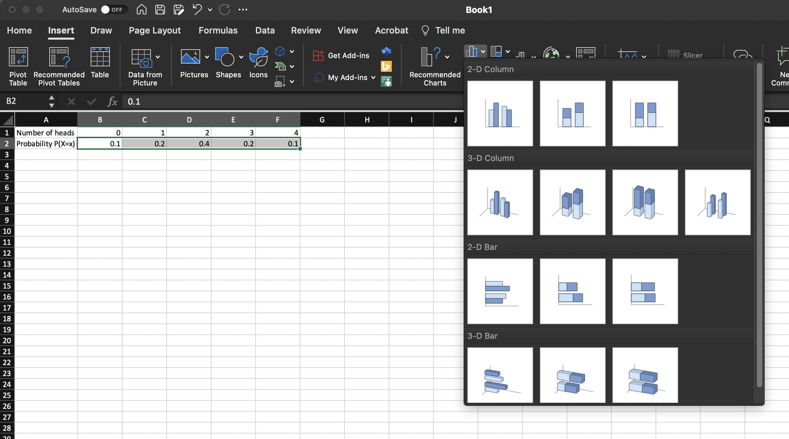
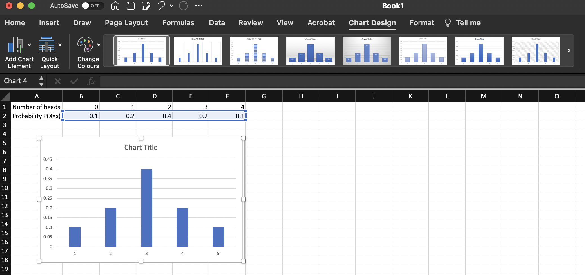

coin <- c(0,1) # vector representing coin tosses c(tails, heads)
set.seed(1) # makes sure we all get the same answer i.e. we use the same randomly generated numbers
tosses <- sample(coin, size = 4*20, replace = T, prob = c(0.5, 0.5)) # this randomly picks a 0 or 1 from coin and there is an equal probability of sampling both. It creates a vector of results i.e. bo tosses in total
dim(tosses) <- c(20,4) # This creates a data frame with 4 columns and 20 rows that represents the 20 trials of 4 coin tosses
tosses ## this prints the result
NumHeads <- rowSums(tosses) ## this sums the number of heads in each trial
NumHeads # this prints the results Learning outcomes
At the end of this computer practical, students should be able to calculate Binomial and Poisson probabilities using your calculator, R commands and R simulations.
The first part of this prac involves walking through some exercises with your demonstrator. These may involve some hand calculations, which you can do using R, your calculator, or in your head.
But before we begin, your demonstrator will lead a group discussion on academic integrity.
Academic integrity
This exercise encourages students to discuss academic integrity, and in particular the grey areas often present. Your demonstrator will provide you with a number of scenarios to discuss with each other in smaller groups, and then with the class.
If you are interested in more information on Academic Integrity at the University of Sydney, see the following link: https://www.sydney.edu.au/students/academic-integrity.html. Also ensure you have completed the Academic Honesty Education Module (AHEM) as soon as you can before your first assessment is due.
The Binomial Distribution
Notation
Factorials: n! = n(n - 1)(n - 2)...(3)(2)(1) for n \ge 1 and 0! = 1.
Binomial coefficients: \left(\begin{matrix}n\\x\end{matrix}\right)=\frac{n!}{x!(n-x)!} for x=1,2,3,...,n
The Binomial distribution models a context in which we have a fixed number n of independent Binary trials and a fixed likelihood of a success at each trial p = P(success).
X = the number of successes in n trials \sim Bin(n,p)
Probability distribution function: P(X = x) = \left(\begin{matrix}n\\x\end{matrix}\right)p^x(1-p)^{n-x} for x=1,2,3,...,n
Cumulative distribution function (CDF): F(x) = P(X \le x).
Exercise 1
With your neighbour, discuss how coin tossing is related to the Binomial distribution?
Exercise 2
Practicing using the Binomial distribution formula
- Calculate 4!, 3!, 2! and 1!.
4!=4 \times 3 \times 2 \times 1
Now you calculate the rest
- Show that
\left(\begin{matrix}4\\0\end{matrix}\right)=1, \left(\begin{matrix}4\\1\end{matrix}\right)=4, \left(\begin{matrix}4\\2\end{matrix}\right)=6, \left(\begin{matrix}4\\3\end{matrix}\right)=4, \left(\begin{matrix}4\\4\end{matrix}\right)=1
\left(\begin{matrix}4\\0\end{matrix}\right)=\frac{4!}{0!(4-0)!}=\frac{4!}{4!}=1
\left(\begin{matrix}4\\1\end{matrix}\right)=\frac{4!}{1!(4-1)!}=\frac{4!}{1!\times3!}=\frac{4\times3\times2\times1}{1\times3\times2\times1}=\frac{4}{1}=4
Now you calculate the rest!
Note you can also calculate this using the nCr option on your calculator - watch this vid https://www.youtube.com/watch?v=tZf8alsyVCQ which gives a nice demonstration with some elevator music in the background to relax you.
Exercise 3
Collaboration - Simulate the Binomial Distribution by Coin Tossing
- Choose a partner and together toss a coin 4 times counting the number of heads (use https://justflipacoin.com/ if you don’t have a coin). Record the number of heads in an excel spreadsheet called (Simulation 1) and set out a table in excel similar to below. Now repeat this process 19 more times.
| Simulation | Toss 1 | Toss 2 | Toss 3 | Toss 4 |
|---|---|---|---|---|
| 1 | ||||
| 2 | ||||
| 3 | ||||
| … | ||||
| … | ||||
| 20 |
- Tally up the frequency of each number of heads and fill in a table similar to the following in excel.
| Number heads x | 0 | 1 | 2 | 3 | 4 | Total |
|---|---|---|---|---|---|---|
| Frequency | 20 |
- Now fill in the probability distribution in excel = the proportion of number of heads in all simulations i.e. number of simulations ith 0 heads/20, number of simulations with 1 head/20, number of simulations with 2 heads/20,….
| Number heads x | 0 | 1 | 2 | 3 | 4 | Total |
|---|---|---|---|---|---|---|
| Probability P(X=x) | 1 |
- now see if you can make a barplot in excel of the above table https://support.microsoft.com/en-us/office/present-your-data-in-a-column-chart-d89050ba-e6b6-47de-b090-e9ab353c4c00


Question: With your stats partner, discuss the shape of the distribution, is it what you would expect to see and compare this to what the barplot you made in excel, are they similar?
Exercise 4
Now we will use R to simulate 4 coin tosses representing 1 as heads and 0 as tails. Note that I have withheld the output to avoid “spoiling” the suprise.
The table function tallies each of the numbers of heads for each simulation. In each trial (4 tosses) How many times did you toss no heads, how many times did you toss 1 head, how many times did you toss 2 heads, how many times did you toss 3 heads and how many times did you toss 4 heads?
Freq_table <- table(NumHeads)
Freq_tableThe prob.table function divides each frequency by 20 i.e.P(X=0)=2/20
prop.table(Freq_table) Now we can plot this. Notice how we customise the x-axis to ensure that 0 is displayed as even though there may be no instances where we got zero heads, it is still a possibility even if the probability is low. for this we use the argument , xaxt = “n” and then draw customised axis labels using the axis function.
plot(prop.table(Freq_table), ylab="P(X=X)", xlab = "x", xlim = c(0,4), xaxt = "n")
axis(1, at = 0:4)Exercise 5
Repeat exercise 4, but this time change the ‘prob = c(0.5, 0.5)’ to ‘prob = c(0.3, 0.7)’.
Question: What happens to the shape of the distribution? What type of coin does this change in probability represent?
Exercise 6
Repeat exercise 4, but this time change the ‘set.seed(1)’ to ‘set.seed(123)’.
Question: What happens to the frequency table ‘Freq_table’ why do you think it might change?
Exercise 7
Six calves were born after artificial insemination (AI) with regular semen. Assuming that the probability for either being male or female is 0.5,
Question: What is the probability that all 6 are male?
X= number of male calves \sim Bin(n=6,p=0.5) P(X=6)=\left(\begin{matrix}6\\6\end{matrix}\right)0.5^6(1-0.5)^{6-6} = 0.015625
or in R we can calculate using the dbinom function which calculates the exact probability of having 6 male calfs born
dbinom(6,6,0.5)Question: What is the probability that more than 4 calves are female?
NOTE P(more than 4 calves are female) = P(less than 2 calcves are male) = P(X=0)+P(X=1)
=\left(\begin{matrix}6\\0\end{matrix}\right)0.5^0(1-0.5)^{6-0}+\left(\begin{matrix}6\\1\end{matrix}\right)0.5^1(1-0.5)^{6-1} = 0.109375
or in R
1-pbinom(4,6,0.5)Question: What are your assumptions? What is a more accurate estimate of the P(male calf)? https://www.beefmagazine.com/mag/sex_ratio_riddle
Assumptions: Each of the births is independent and P(male calf = 0.5). (In reality, it is 1.06 males per every female born in large populations of cattle, which gives p = 0.5145631. See article link.)
Using the updated probability p = 0.5145631 and using R recalculate
Question: What is the probability that all 6 are male?
Question: What is the probability that more than 4 calves are female?
Question: Finally, calculate what is the probability that exactly 4 females are born?
The Poisson Distribution
The Poisson distribution is often used to model the number of expected events that occur during a given unit of time.
Remember if X \sim Po(\lambda) then
P(X=x)=\frac{\lambda^xe^{-\lambda}}{x!} for x = 0,1,2,... and \lambda>0
Exercise 1
Lets take a look at an example. Let us assume that on average 5 shoppers enter a store each hour. Say the shop is open for 10 hours per day, what would a typical day look like. Assuming that the number of visits follows a Poisson distribution i.e. If X \sim Po(\lambda), and because we know \lambda=5 and n=10, we can simulate this in R using the following:
shoppers <- rpois(10, 5)
shoppersQuestion: Take a look at the minimum and maximum number of shoppers generated by the model and discuss with your neighbour how you, as a shop owner, might use this information? Question: Now run the simulation for a full 5 day week, is there any change? Question: Now suppose as a shop owner you are concerned that your shop assistant might get overwhelmed if more than 10 shoppers come in, in any one hour period, what is the probability of this?
Exercise 2
We also often say that the Poisson Distribution is good for modeling rare events. For example, recent work in Drosophila suggests the spontaneous rate of deleterious mutations is 1.2 per diploid genome.
Open the following article and read the abstract and then search the word poisson and read the final two sentences of this paragraph.
http://www.nature.com/nature/journal/v445/n7123/full/nature05388.html
Assume that X = the number of deleterious mutations X \sim Po(1.2).
Question: What is the probability that an individual has 0 mutations?
P(X=0)=\frac{1.2^0e^{-1.2}}{0!}=0.3011942
Or in R
dpois(0,1.2)Question: What is the probability that an individual has less than or equal to 2 mutations?
P(X\le2)=P(X=0)+P(X=1)+P(X=2) =\frac{1.2^0e^{-1.2}}{0!}+\frac{1.2^1e^{-1.2}}{1!}+\frac{1.2^2e^{-1.2}}{2!} =0.8794871
Or in R
ppois(2,1.2)More recent research found that the average spontaneous rate of deleterious mutations was actually 1.4 per diploid genome. Using R recalculate the following.
Question: What is the new probability that an individual has 0 mutations. How does this compare to the former probability, what does this suggest?
Question: What is the new probability that an individual has less than or equal to 2 mutations How does this compare to the former probability, what does this suggest?
Advanced exercise
From the tutorial we looked at Tomato germination. Use simulations to find approximate Binomial probabilities obtain an estimate of the probability of getting 7 or more germinating seeds, by doing simulations from a Bin(8, 0.7) in R.
Remember that the exact probability is
1-pbinom(6,8,0.7)[1] 0.2552983- First try 10 simulations and fill out a similar table to below in excel. What is your estimate of the probability of 7 germinating seeds?
set.seed(123)
seeds <- rbinom(n = 10, 8, 0.7) # randomly generates 10 values from Bin(8,0.7)
seeds ## prints seeds
table(seeds)/10 # turns counts into probabilities
barplot(table(seeds)/10, xlab="Number Germinated x", ylab="Probability", col="green")- Next try 100 simulations.
set.seed(123)
seeds <- rbinom(n = 100, 8, 0.7) # randomly generates 100 values from Bin(8,0.7)
seeds ## prints seeds
table(seeds)/100 # turns counts into probabilities
barplot(table(seeds)/100, xlab="Number germinated (x)", ylab="Probability", col="green")- Now we will try 10000 simulations. What do you notice about the histogram?
set.seed(123)
seeds <- rbinom(n = 10000, 8, 0.7) # randomly generates 100 values from Bin(8,0.7)
table(seeds)/10000 # turns counts into probabilities
barplot(table(seeds)/10000, xlab="Number germinated (x)", ylab="Probability", col="green")- Now we can compare the exact results and the simulated results by adding up the probabilities for 7 and 8 seeds germinating in each of the scenarios.
Note that the numbers will may differ slightly each time as they a randomly generated unless you set the same seed.
| Number germinated | P(X\ge{7}) |
|---|---|
| Exact method using R | |
| Simulation (n=10) | |
| Simulation (n=100) | |
| Simulation (n=10000) |
Question: Which of the simulations gives the closest result to the exact method, why do you think this is - try ask chatGPT?